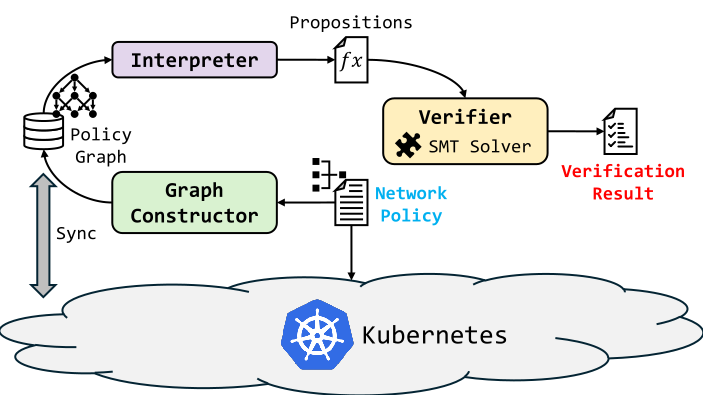

Growing Policy Relationships
Kubernetes workloads and selectors create many overlapping relationships that must be considered during verification.
VeriKube introduces a graph-based representation of container network policies to improve the efficiency of policy verification. It supports the complex semantics of Cilium policies while reducing memory consumption and verification overhead.
01 / CHALLENGE
Kubernetes workloads and selectors create many overlapping relationships that must be considered during verification.
Representing connectivity at individual container-pair granularity can consume substantial memory and computation.
Practical systems such as Cilium support rich policy semantics that must be preserved by the verification process.
02 / DESIGN RATIONALE
Group containers with equivalent policy-relevant attributes and represent policy relationships as a graph.
Translate the relevant graph and policy conditions into logical propositions while preserving their intended semantics.
Use an SMT solver to check the generated propositions and determine whether the requested network conditions hold.
03 / SYSTEM ENGINEERING

Processes Kubernetes network policy information and builds a graph representation of the relevant container classes and policy relationships.
Approach 01 · RepresentInterprets the graph structure and converts applicable policy conditions into logical propositions for formal verification.
Approach 02 · FormalizeIntegrates the Yices2 SMT solver to evaluate the generated propositions and determine whether the specified network policy conditions are satisfied.
Approach 03 · Verify04 / OUTCOMES
Performance figures are reported relative to the baseline and experimental conditions described in the VeriKube publication.